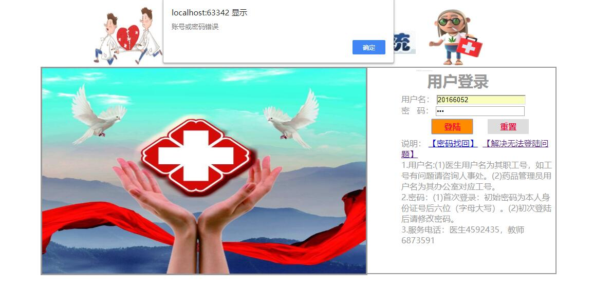
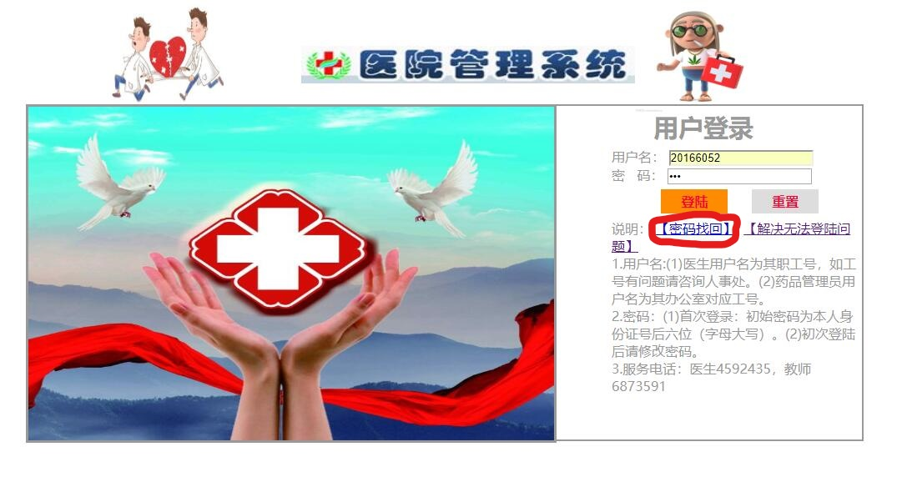

|

| 校园应用门户出现用户名密码错误而无法登陆时的处理方法 |
| 发布人:张涛 发布时间:2017-9-6 14:55:18 审核人:张涛 所属类目:未知—常见问题 |
| 医药系统的访问地址是http://localhost:63342/text1/js/1.0.html?_ijt=5bahfjoudrtr6nmla0c5p8j6h4，如果您用工号和密码无法登陆系统（见图1）时，请尝试通过以下几个步骤来完成登陆。  图1、医药系统登陆错误提示页面 1、确定您的用户名（工号）和密码准确无误。 2、如果还无法登陆，请尝试[密码找回]功能，见图2。点击进入后有两种方式找回，[通过回答问题新设密码]和[把新设密码的连接发到注册Email]，点击进入后在账号位置请输入您的工号或者学号，然后按照相关提示输入信息后就会出现修改密码的提示，见图5。  图2、首页密码找回功能的具体位置 3、如以上方法均无法登陆，请拨打86609104。 信息化办公室 2017年9月6日 |
| 总共有8068人查看此信息 今日有4人查看此信息 【打印全文】 【关闭页面】 |